Este módulo aún se encuentra en desarrollo.
Aprende antes de llegar al laboratorio. Consulta procedimientos, videos, recomendaciones y recursos para fortalecer tu formación práctica.
Contribuir al desarrollo del Programa de Ingeniería Civil y de la región proporcionando los recursos necesarios para la ejecución de prácticas y ensayos de laboratorio que fortalezcan las actividades académicas, investigativas y de extensión.
Ser un laboratorio líder en la ejecución de prácticas y ensayos relacionados con la Ingeniería Civil, reconocido por la calidad de sus procesos, la modernización de sus equipos y el apoyo permanente a la formación profesional.
El LIIC cuenta con diferentes zonas especializadas para el desarrollo de prácticas académicas.
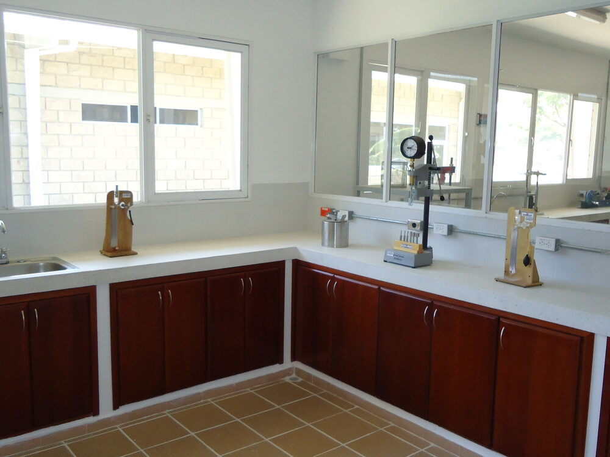
Caracterización y comportamiento de suelos.
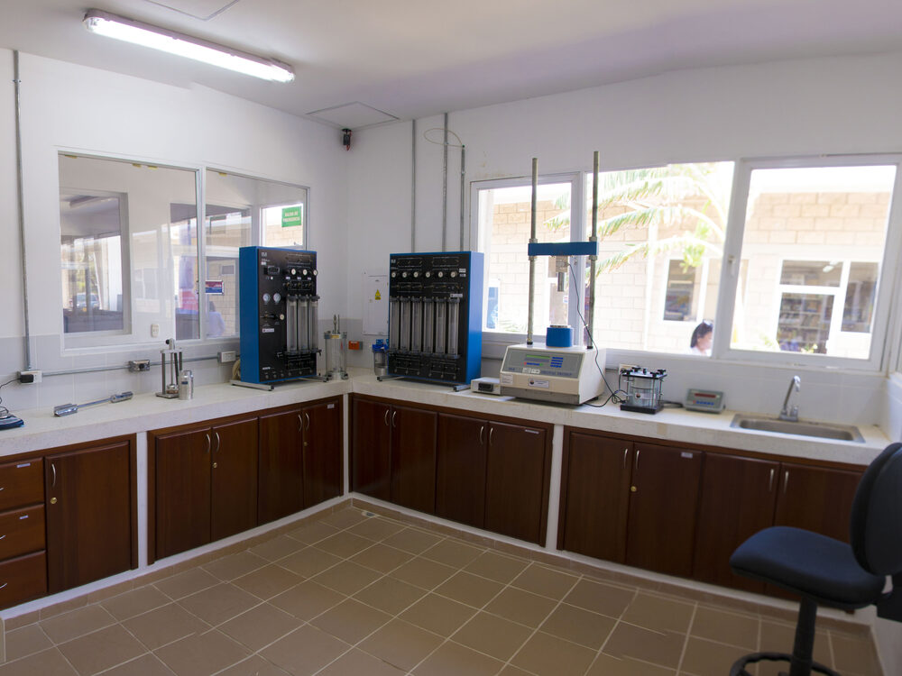
Diseño de mezclas y control de calidad.
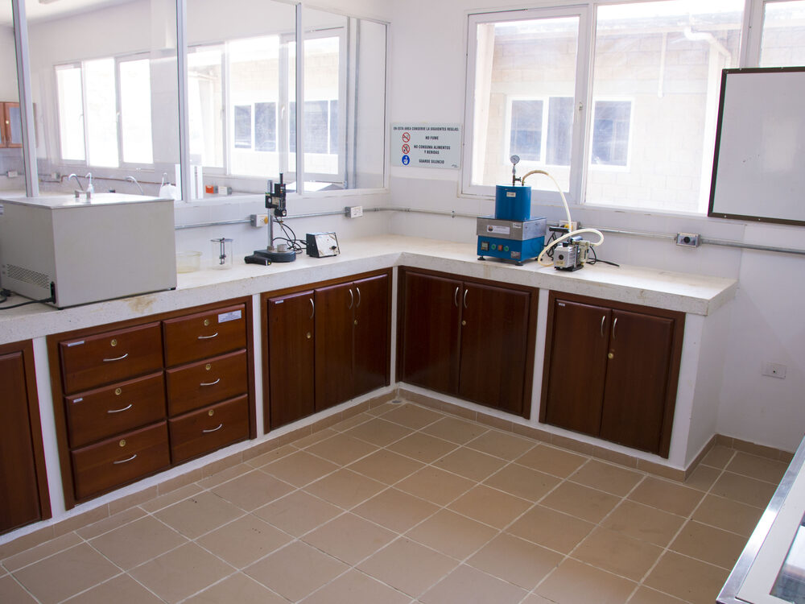
Materiales asfálticos y diseño vial.
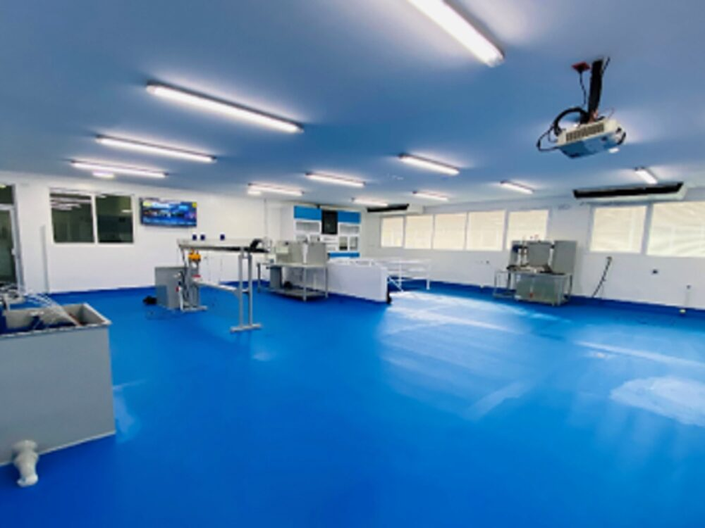
Ensayos hidráulicos y flujo en tuberías.
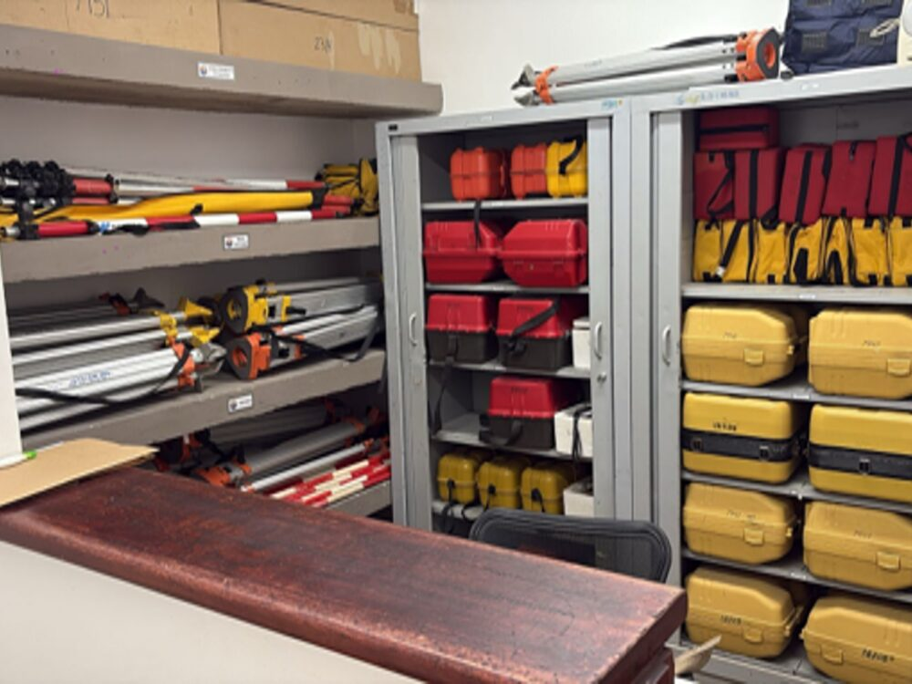
Equipos GNSS, estación total y nivelación.
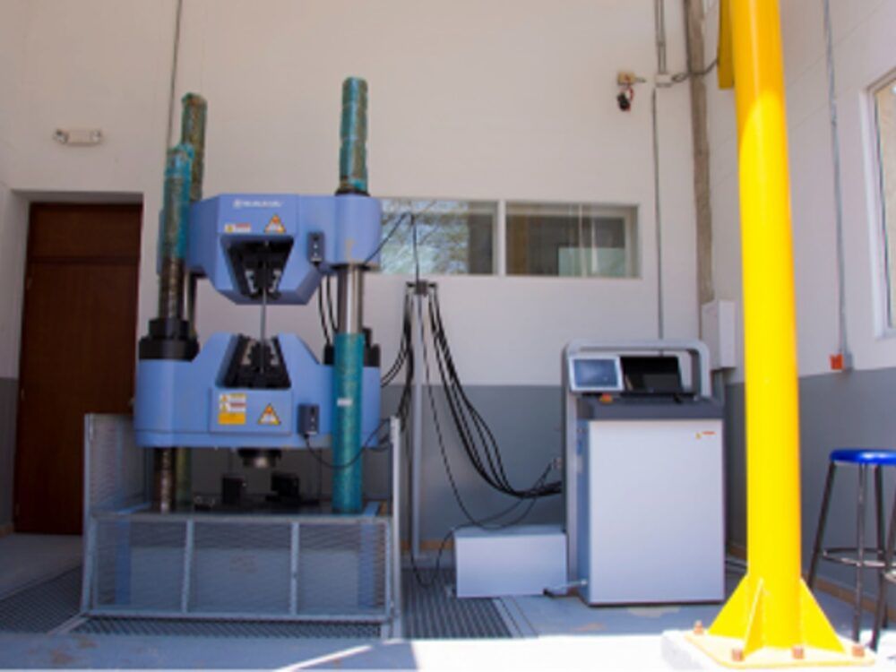
Ensayos mecánicos y comportamiento estructural.
Selecciona la asignatura sobre la que deseas consultar recursos de aprendizaje.
Este módulo estará disponible en futuras versiones.
Este módulo estará disponible en futuras versiones.
Prácticas relacionadas con materiales bituminosos, mezclas asfálticas y estructuras de pavimento.
Este módulo estará disponible en futuras versiones.
Este módulo estará disponible en futuras versiones.
Este módulo estará disponible en futuras versiones.
Todo el material necesario para prepararte antes de ingresar al laboratorio.
Consulta procedimientos resumidos y fichas técnicas.
Observa paso a paso el desarrollo de cada ensayo.
Identifica los errores más comunes antes de realizar la práctica.
Aprende a analizar correctamente los resultados obtenidos.
Consulta las normas técnicas utilizadas en cada ensayo.
Comprueba tus conocimientos antes de ingresar al laboratorio.
Conoce algunos espacios del Laboratorio Integrado de Ingeniería Civil.
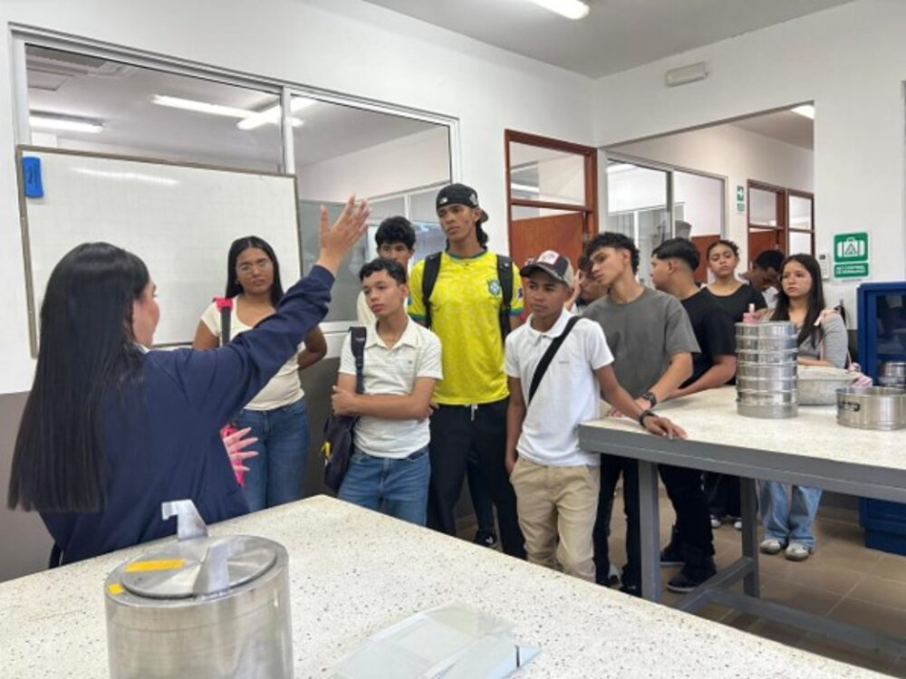
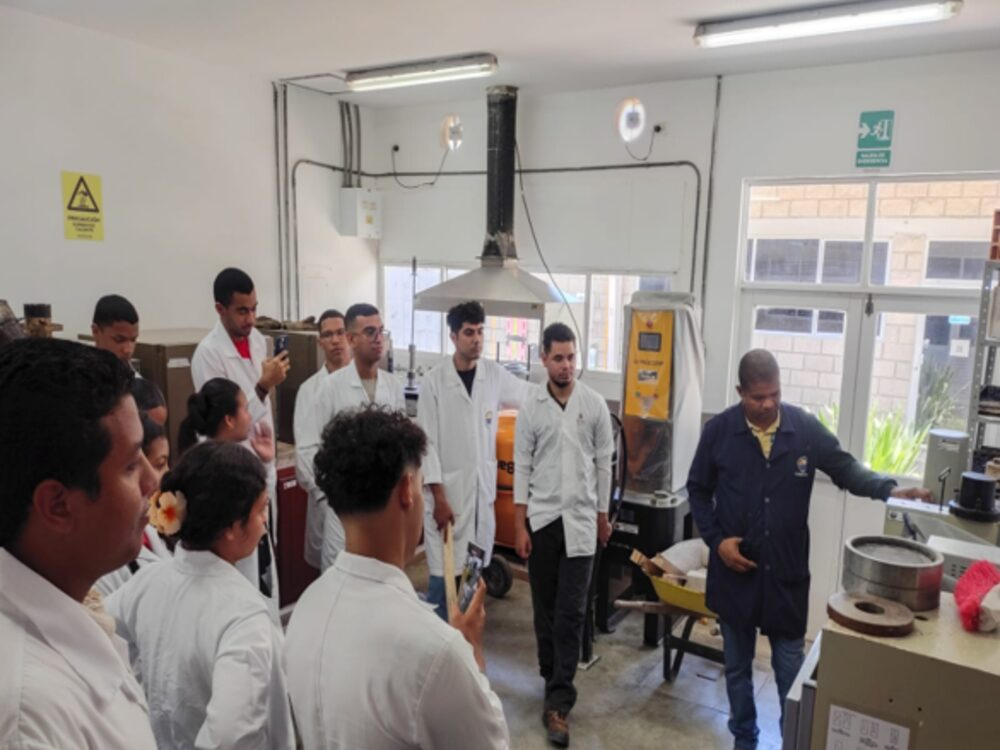
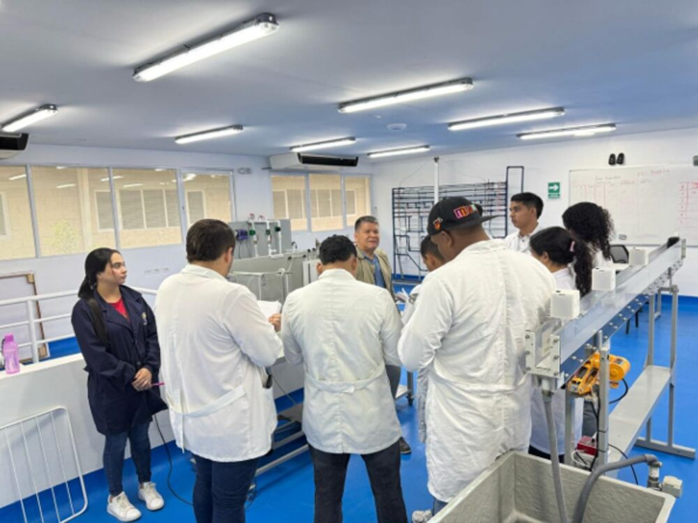
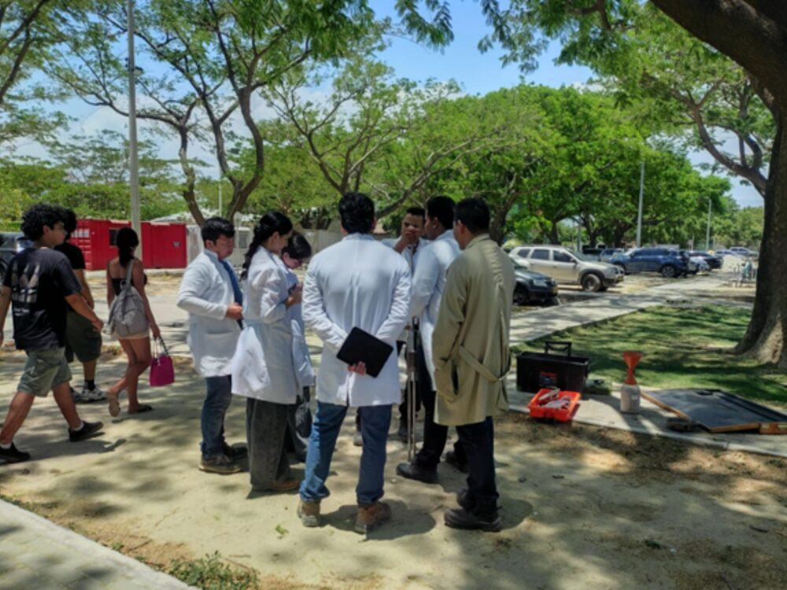
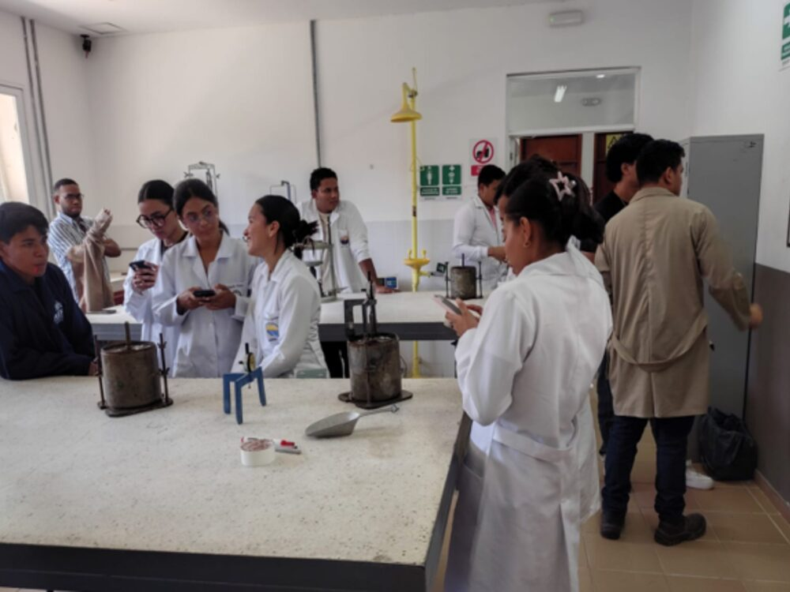
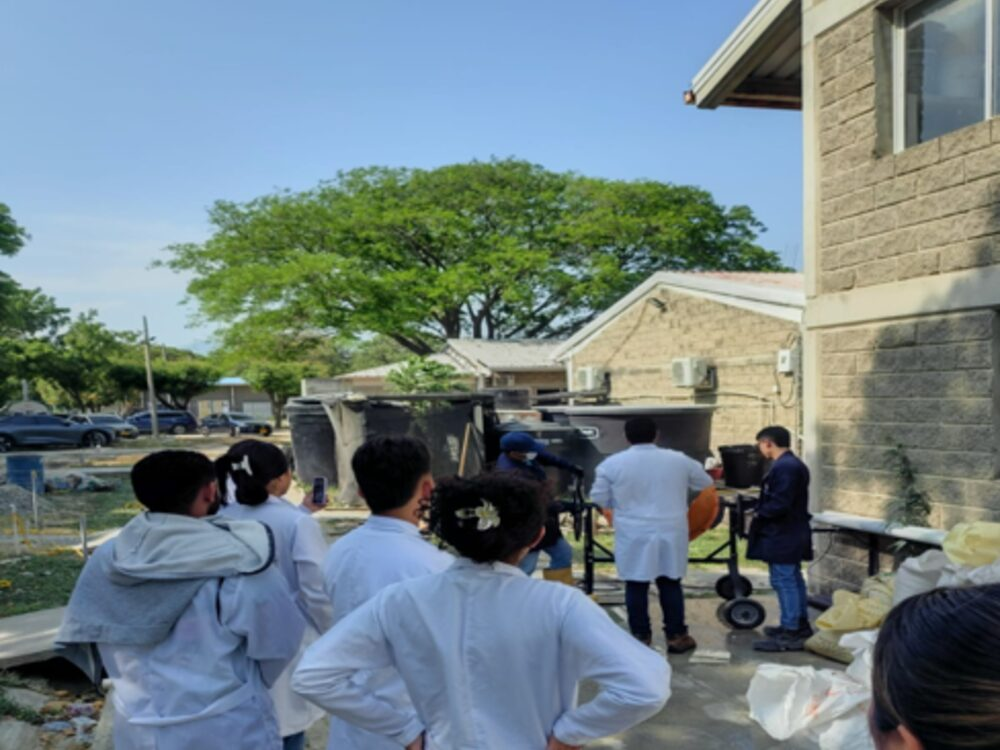
Accede al módulo de Pavimentos y fortalece tu aprendizaje antes de realizar la práctica.